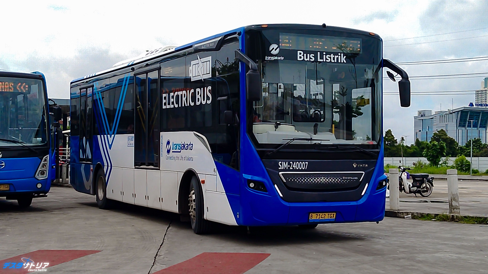

Work That Moves the Needle

Passenger dissatisfaction and lost revenue were traced to a single congested corridor. Statistical analysis of rider behavior unlocked route optimizations revealing a potential 400% revenue growth opportunity on specific route.
Manual land-use surveys are too slow and costly for large-scale agricultural planning. A CNN + Vision Transformer hybrid classifies 6,000 satellite images with near-perfect precision across Keras and PyTorch frameworks.
Waste misclassification raises recycling costs and environmental impact. A VGG16 transfer learning model automatically distinguishes organic from recyclable waste.
Manual social listening can't scale to millions of posts, leaving brands blind to sentiment shifts. An automated NLP pipeline using TF-IDF and Logistic Regression delivers real-time insight at 80% accuracy.
Mass-market campaigns for term deposits burn budget on disinterested customers. A predictive model using demographics and economic indicators slashes targeting costs while increasing conversion rates.

Blanket insurance policies ignore individual risk profiles, eroding profitability. A claim-prediction model identifies high-risk policyholders, enabling precision targeting that unlocks measurable profit growth.